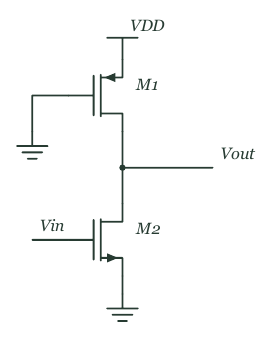
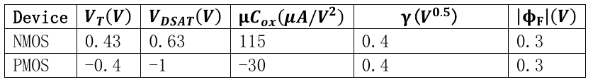

题目来源
HW3/HW3-1.pdf · PDF页 3 · 原题号 11
原题按原编号列出；实验题明确整理为读图或笔试问法。重复知识点保留各来源版本，避免漏掉不同参数与条件。
先读：本题所需概念
伪 用栅接地、始终开启的 作上拉， 受输入控制作下拉。输出低时两管相互竞争，低电平 通常大于零，并有静态电流；输出高时 接近电源。输出品质依赖两管驱动比例，因此属于比例逻辑。 是输入输出相等的开关点； 可由传输曲线斜率为负一的边界求得。，源漏电压应按每管实际端点分别计算。
知识出处：PPT/chapter3-inverter01-static behavior-T 20261011.pdf，PDF 第 50 页。
回看完整解释：8.7 课件里另外两种结构需要知道什么 · 8.3 输出究竟停在哪里，怎样求VM · 8.5 怎样由VM和g估算噪声容限 · 5.5 先用较简单的条件计算三个状态的电流 · 5.7 尺寸缩小后，为什么不能一直用平方律。题目中的专用参数以题干定义为准；可点带底纹的术语回查首次解释。
题目
图中上方 为栅接地的 ，；下方 为 ，。，两管体接各自源。使用短沟道统一模型、忽略沟道长度调制。
| 管型 | |||||
|---|---|---|---|---|---|
求 ； ； ； 的 增到 后，求两种噪声容限。输入边界用 斜率 定义。


查看答案与解析
答案与解析
先辨认图中管型，不能把 当成 。 初始 ，。体接源，体效应项为零。
在低输出段为速度饱和，恒定上拉电流 。
电平。 输入为零时 截止，输出升至 。输入为 时 在线性区：
取满足低输出和线性假设的小根 。
翻转点。 在 两管均受速度饱和限制：
得 。回代验证 过驱动大于 ， 漏源幅值大于 。
斜率边界。 设 。在 ， 为普通夹断饱和、 线性；由电流平衡与斜率 得
在 ， 线性、 速度饱和；斜率条件给 ，所以
于是 。
加宽。 加倍为 ，上拉电流为 。同样求得 ，故
伪 是有比结构，增强上拉会同时抬高低输出和改变两种噪声容限，不能只套普通互补反相器的中点公式。